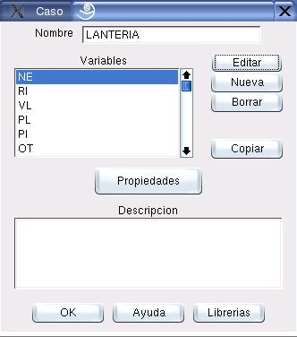

Edición de Casos
Figura 5.1:
Diálogo para edición de Casos
|

|
La figura 5.1 muestra el cuadro de diálogo de edición de Casos. Para acceder a él se deben seleccionar las opciones del Menú:
Proyecto  Caso
Caso
Téngase en cuenta que el caso que se editará será aquel que esté previamente seleccionada en el Proyecto. Para cambiar la selección puede usarse el listado de la Barra de Herramientas, o el cuadro de diálogo de edición de proyectos (Ver sección 3.1)
Los principales componentes de este cuadro de diálogo se explican a continuación:
- Nombre:
- Este es el nombre que identificará al Caso; debe ser único.
- Variables:
- Cada variable es un trozo de la información del Caso. En el cuadro de diálogo se muestra el listado de las variables definidas, y se encuentran las opciones de crear nuevas variables asi como de editar o eliminar variables ya existentes.
- Copiar:
- Con esta opción el usuario puede copiar todas las variables que están definidas en una determinada metodología (ver sección 5.2).
- Propiedades:
- El usuario puede asignar un listado de propiedades y sus respectivos valores al caso (Ver sección 11.4).
- Descripción:
- El usuario puede incluir un texto descriptivo de la Metodología.
Oscar Duarte
2005-10-17